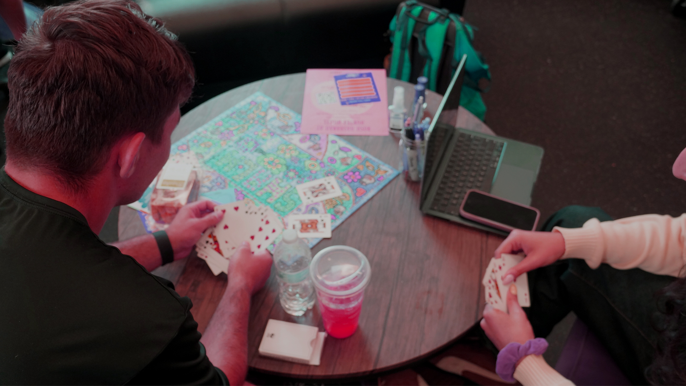

The first image I took was of two people playing cards. I played around with the hue/saturation making it more pink and purple becasue the Hillel, the location of this photo uses purple as their logo color. I wanted the photo to be fun and full of color, I heightened the exposure as well. I just wanted this photo to fun, the people captured are having a good time and so should the people looking at this photo.
